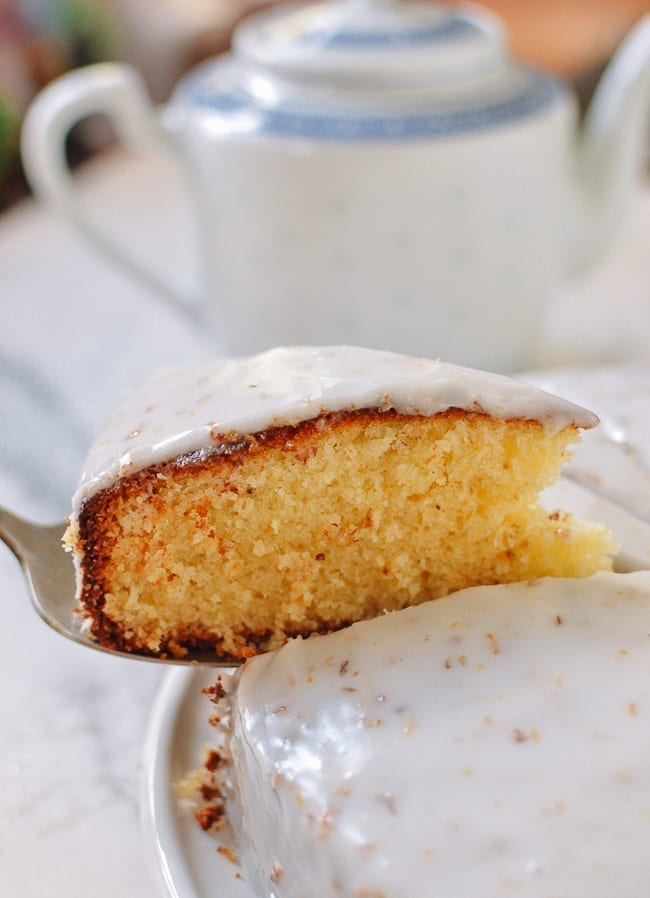

Osmanthus Cake

Description
Afternoon tea cake iced with whipped cream and berries.
Ingredients
- 1/2 cup unsalted butter
- 3/4 cup granulated sugar
- 1 teaspoon vanilla extract
- 1/2 cup oil
- 4 large eggs
- 1/4 cup osmanthus syrup
- 1 1/3 cups almond flour
- 1 cup self-rising flour
- 1/2 teaspoon salt
Steps
- Preheat the oven to 400°F. Grease and flour a 9-inch round springform pan. You can also use an 8-inch square pan, but the pan should not have a dark non-stick coating, or it’s likely it will burn.
- Add the room temperature butter, sugar, and vanilla extract to the bowl of an electric mixer fitted with the paddle attachment. Beat on medium speed until light and fluffy, 1 minute. If your coconut oil is solid, add it at the same time as the butter. If it’s liquid, add it after the butter and sugar have had a chance to cream together.
- The mixture may be a little separated if you are using liquid rather than solid coconut oil. That’s okay. Scrape the sides of the bowl, and then add the eggs one at a time, beating well with each addition. It should be golden in color and thickly emulsified. Mix in the osmanthus syrup. Give the bowl another scrape to make sure everything is mixed evenly.
- In a separate bowl, whisk together the almond flour, self-rising flour, and salt. Turn the mixer speed to low, and gradually add the dry ingredients in three batches. Pour the mixture into your prepared pan. Immediately place into your preheated oven, and bake for 25 minutes. Reduce the oven temperature to 375°F, and tent the cake with foil. Bake for another 10-15 minutes.
- The cake is done when a toothpick inserted into the center comes out clean. NOTE, poking the cake prematurely may cause it to collapse in the center. (If this happens, it’ll still taste good, so don’t worry!). Remove the cake from the oven to cool. It should be a deep brown color.
- Cool for 20 minutes before removing the cake from the pan. A paring knife around the rim of the pan helps loosen it. Let cool completely on a wire rack before glazing. If glazing the cake, whisk together the sifted powdered sugar, milk, and osmanthus syrup until you get a smooth glaze. Start with 4 tablespoons of milk and only add the last tablespoon if the glaze looks too thick. Pour over the cooled cake.